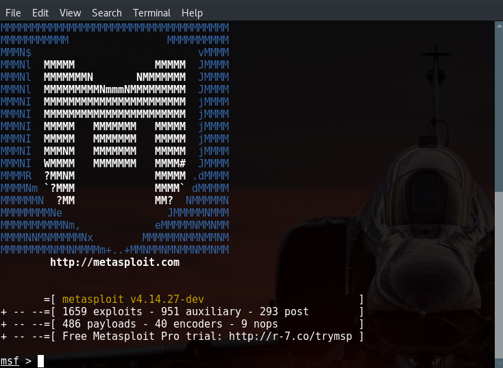

I know the word 'hacking' excites you all, so it's necessary to know how the whole hacking process is divided into 5 phases. It's not a 'rule written in stone'. Once you become a professional it mostly depends upon your imagination and creativity.
Before we start it's important to know that this article is not about motivating you to go out and hack. It's necessary to know how a hacker works so that we could hack test/pentest on our own. Also,
To protect youself from a hack, you must think like a hacker
5 Phases
Not necessarily a hacker has to follow these 5 steps in a sequential manner. It’s a stepwise process and when followed yields a better result.
- Reconnaissance
- Scanning
- Gaining Access
- Maintaining Access
- Clearing Tracks
1. Reconnaissance
In the 1st phase, hacker tries to gather information about the target. It may include Identifying the Target, finding out the target’s IP Address Range, Network, DNS records, etc. The attacker gathers info either in an active or passive way. It is also called as Footprinting phase.
The tools widely used are:- NMAP, HTTPTrack, Hping, Maltego and Google Dorks.
2. Scanning
This phase includes usage of tools like dialers, port scanners, network mappers, sweepers, and vulnerability scanners to scan data. The hacker looks for open ports, live systems, vulnerabilities, map of the network, etc.
Any information that may help in the hacking process is scanned. The tools used could be:- Nessus, Nexpose, Maltego and NMAP.
3. Gaining Access
This is the phase where the magic happens (or the crime). With the help of data from Phases 1 & 2, the hacker now tries to gain access using various tools or methods. The possible attacks could be:- Phishing , DOS (Denial of Service), Buffer overflow, session hijacking, etc. The primary tool used is Metasploit.

4. Maintaining Access
It is the process where the hacker has already gained access into a system. After gaining access, the hacker installs some backdoors in order to enter into the system when he needs access in this owned system (zombie system) in future.
No overt exploitation or attacks will occur at this time. If there is no evidence of detection, a waiting game is played letting the victim think that nothing was disturbed, while the hacker will do the work in background. It is done using:- Trojans, Rootkits or other malicious files.
5. Clearing Tracks
No thief wants to get caught. An intelligent hacker always clears all evidence so that in the later point of time, no one will find any traces leading to him.
Before the attack, attacker would change their MAC address and attack using a VPN.
After gaining acces, the attacker covers his tracks by:- Modifying/deleting the Logs, registry values and temp files
As a White Hat hacker ;) i hope you will use this knowledge to be aware, for pentesting and to fortify yourself of any attacks that might happen.
Now that you know the phases and several tools, we will dig deeper and see how the whole thing works very soon. Stay tuned for more exciting articles.